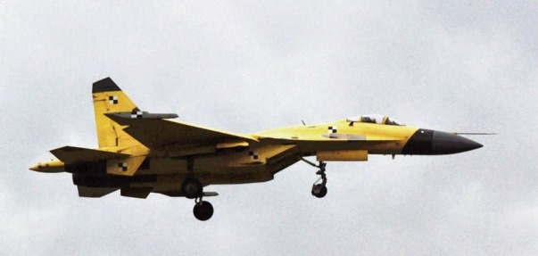

转眼又是三个月，是再总结一次共军新装备消息的时候了。这一季没有太多新闻，最重要的是017号航母终于在四月之前在大连造船厂上了船台，目前只能看出它的施工法用的是类似美国福特级的就地迭建，而不是英国伊莉莎白女王级的大分段拼合方式。这个时程与三个月前一名大连造船厂员工透露的估计符合；好几个消息来源也都提过定单是2013年八九月间下的，所以从开建到上船台共是18个月左右。这比大部分军迷的估计要长，不过军迷一般不是造船的行家，所以让自己心急的心情影响对时程的估算也是人之常情。
我对造船是完全外行，所以一般只能转播二手资讯。不过055级防空巡洋舰（共军自称为“大驱”）原本有很多军迷估计是今年上船台，但是既然它在2014年十二月之后才开建，依017号航母的先例，12个月就上船台似乎是不太实际的，所以我现在认为应该是明年春天才会有船台的照片出现。
继江南造船厂之后，大连造船厂也开始建造052D防空驱逐舰。我以前已经提过这是一型非常先进的舰只，它的对空雷达甚至优于美军现役的伯克2A级，防空飞弹与美军最新的标准二型相比也是各有千秋，它的批量生產是合理而且可预期的。
共军正要在本周开始与俄国的黑海舰队在黑海和地中海举行联合演习；这是中共海军第一次在西方海域进行的军事行动（以往只做过访问和撤侨），具有歷史性的意义。苏联时期的海面舰只由乌克兰负责建造；虽然经过25年的努力，俄国至今仍然不能自建新一代的大型海面舰艇，尤其在船用燃气轮机和柴油机上，是一片空白。过去几年一直有谣言说俄国可能购买共军的新式舰只，原本传说的是051C级驱逐舰，今年的谣言改为054A护卫舰，尤其是在联合演习被宣布之后，很多军迷猜想共军派去的两艘054A刚好是推销用的样本。我个人认为俄国的经济情况仍然不佳，重新建军的重点又是扶持自己的军工，而且俄国的短板不在于设计而在于部分关键部件的生產，所以这些谣言的可信度很低。比较可能的是中共把仿制于乌克兰的船用燃气轮机卖给俄国；几个月前已经有消息证实中共提供了中型柴油机，所以俄国人对买船用引擎应该是不排斥的。
谈到推销用的样本，法国海军派了两艘军舰访问中国，目前正在上海。其中一艘是台湾有的拉法叶级护卫舰，另一艘则是西北风级两栖攻击舰。因为法国为俄国建的两艘西北风级，现在因为制裁而不能移交，俄国正在交涉退款，而法国海军自己显然是用不起额外的大型舰艇的，所以看来它们必须折价卖出，于是军迷们又开始猜测法国人想要把它们推销给中共。我个人认为西北风级定价太高，又已经专为俄军做了设计改动，要改成中方的要求，价钱只会更高，即使法国人按本钱卖出只怕还是比中共国產品贵得多；此外中共对建造这种尺寸的两栖攻击舰，并没有困难（我并不是说西北风级没有长处，和071级相比，他的全电动力系统和C4ISR都更先进，但这还算不上代差），所以除非法国人愿意大赔本，或者中共急着藉此打破欧盟的武器禁运，这大概又是军迷们自作多情。两栖攻击舰实在是太大了，只有区域强权才有需要，而世界上的区域强权不是能自建（如日本和韩国），就是已经订了别家的（如土耳其和澳洲），剩下的目前经济都不太好（如巴西和南非），所以我却也想不出法国除了印度以外，能找谁当冤大头（可是印度没有邻近的岛屿须要攻击的。。。）。当然说到冤大头，全世界的军工企业都会首先想起台湾，不过以台海的形势，连马英九都应该知道台湾不需要两栖攻击舰这样的远程功势武器。
在空军方面，J20在过去这三个月并没有新的原型机出现，只有2013号被动了小手术，尾巴改成了和2015号相同的新设计。依J20的进度来估计，今年内应该还会有一到两架新原型机出现，我们拭目以待。
SU-35的谈判似乎陷入了新的困难；我的猜测是俄国人若是只卖24架，还必须整合中方的航电，的确是会赔本的，所以虽然中俄关系空前的好，生意还是谈不拢。两周前渖阳飞机公司又展示了新的J-11D战机，它必然装备了中方想放上SU-35的航电，所以这很明显地是要抢生意。不过渖飞仍然没有能力重新设计承力结构，所以内部的骨架应该还是沿用SU-30的第二代设计，而不是SU-35的第三代。此外目前仍然没有任何迹象显示渖飞有能力开发全自动的数位飞控软体，应该还是沿用J-11B的仿类比式飞控，这才是最糟糕的。我想中共还是买一批SU-35给渖飞照抄比较保险。
最近传出的J-11D照片，外型和J-11B基本没变（J-11C就是后来的J-15），只有挂架多了一对，所以骨架应该是仿造了SU-30而不是原本的SU-27。上周有一个叫TSQ的军迷写了长篇大论为渖飞辩护，基本上是说从J-11A到J-11D的四、五个演进阶段都很急，所以都没有时间来“吃透”J-11的气动设计。这当然是推卸责任的胡扯，任何当过经理的人都应该遭遇并处理过。事实上每个阶段的怠工都很容易找藉口，但是一连几个阶段下来还是没有进展，那就是明显的红灯了。渖飞研究这个机型已经有24年了，固然每个阶段都有阶段团队，但是必然也会有另一个团队来做长期的研发，而这个长期研发团队在24年来，只交了一张大白卷，这在先进国家的军工企业是不能想像的，只有印度才有先例。有些大陆网友喜欢讥笑印度军工，却偏袒自己的无能企业；这是非理性而且无视事实的。
26 条留言
其实中共思考问题最严重的问题，倒不是山寨是否成功，或者是对某个已经存在的產品的进一步开发。最致命的思考问题弱点，是对核心技术成就的漠视。
以战机为例，围绕着战斗机轰炸机转了无数圈，都是重外表不重里子。始终没有在核心的发动机上下功夫。汽车工业也是类似问题，总是在外观上做无限努力而不在核心的发动机上下功夫。
我认为出现这个情况的原因有两个，第一，其实是对知识產权缺乏足够的认知和保护，大家都知道做发动机是个费力不讨好的事情，一旦失败，不能卖出足够的產量，意味着所有投资的泡汤，而且就算做出来，也快被人山寨掉了，因为自己也有山寨别人的习惯。第二则是过分崇洋，认为自己做不到。这点我还是读大学的时候，就听过一个教授说，研发一个发动机要多少多少钱，自己是如何如何的没钱做不到。
所以你就看到一个很奇怪的现象，凡是能买到的，自己就做的很差。反而是买不到都做得不错，比如氢弹的于敏起炸方式，都是自己的创作。
另外一个例子是激光打印机，台湾叫住雷射打印机，中国以前一直不做，联想的柳传志做过，但是失败收场，所以中国在这方面一直没有自己的核心技术，一直到几年前我的一个同学开始自己研发，其实也就是几年时间，就全部获得自己拥有的知识產权。產品质量优于三星，次于惠普，但是市场价格低于三星。我的同学只不过是一个民营企业家，跟吉利的李书福差不多。所以中国前几年才进入激光打印机技术的四国俱乐部。而央企，国企都在吃乾饭。
开发新技术，有表现好的，也有坏的；不过过去35年的确是直接从国外拿来最方便可靠，这个习惯现在要改了。我想习政权已经尽力了，现在看企业家和主管们自己能不能觉悟。
SU-27D有困难、那么解放军何不先买120架S35、先渡过战略期？又不差钱。
谈判谈了那么久、应该另外有原因吧？如果J-11B以后开始换装太行发动机的话、那就表示是稳定性进歩。
我个人是觉得该买的，买48架俄国人就会很高兴了。不明白为什么共军的谈判代表那么斤斤计较，难道是暗地里为渖飞留生意？
太行还是比117S差半截的。
太行还是比117S差半截的?
去年14吨太行就出现在珠海航站上了。楼主不会不知道吧。117S也就是14.5吨嘛。差半截？太夸张了。而且俄国人肯卖苏35，也不会卖117S的FADEC全权限数字式发动机控制系统的源代码，源代码是肯定不会卖的，所以，引进117S的意义真的不大。
另外，俄国两大发动机制造商，土星被俄国自己人看重，研发117S，最新的产品名字叫做产品30，我看超大的。还有一个是礼炮，礼炮是中国出资资助它继续改进99M系列，目前的阶段成熟产品是99M1也达到了13.5吨左右，99M2计划是14吨，99M3计划是15.5吨。最起码中国的14吨太行已经出现在珠海了，而且自己研制的发动机，自己会自主研发FADEC，源代码是自有知识产权，所以改进，更新，都自主控制。相比用117S受制于人，毕竟FADEC相当于人发动机的大脑，人脑受制于人，比如台湾人的大脑受制于美国人和日本人，所以我们一般称呼为脑残，如果继续用受控制度117S，苏35最关键的发动机还是受制于人啊。这是中国空军不得不考虑的，中国已经用了99M系列作为过渡，这就是花钱买过渡产品，然后集中力量自己研发太行以及配套的FADEC，没有过渡的99M，那么J10B可能出现的更晚也说不定。
整好，我今天看到一个文章，刀口的，以前在看楼主帖子的时候，有评论推荐楼主看刀口文章，楼主说刀口裤衩太红了，我自己觉得还算正常，刀口经常就一段官样文章和大众披露的图片做细微分析，然后得出比较红裤衩的结论。我认为不能把刀口归为裤衩太红之类，毕竟看文章的，看完后自己要掂量一下，这货分析的对不对，合理不合理。实际上，楼主知识丰富，凭经验，应该能看出来刀口 红裤衩到底是百分之多少的红。我自己在看刀口文章的时候，感觉是红，但是逻辑推理有根据，有一些蛛丝马迹作为证据。反正不能归类为 神棍的骗子。
今天整好看到一篇。
blog.sina.com.cn/s/blog_777099070102viqz.html对了，除了汉唐，我推荐楼主看这个
临溪钓叟的博客。
我在给楼主推荐一个裤衩更红，爆料更爽的，老马夜聊，我是在这个地方看的：
home.meyet.com/home.php那个刀口的文章中，提到林左鸣参加《对话》栏目的视频地址在这里：
tv.cntv.cn/.../c7a9c6cd91df4219939ef53200679ce6楼主可以与道口的 文章相互对照着看，可以自己审视 刀口分析涡扇15峨眉的时候，有没有过于红裤衩，
我看过刀口有关FADEC的原文，非常不能同意（现在我对他和老马已经很失望了）。FADEC这东西并不是像他说的那样需要源代码的，就像你买微软的视窗作业系统，然后在上面写应用程式，是不需要视窗的源代码的，只需要把界面（API，Application Program Interface）定义好就行了。
波音这样安全第一的民航公司，用罗罗（Rolls Royce）的发动机时，也是只有API而没有Source Codes的。
俄国人偏爱土星是因为它有基础科研的底子，礼炮原本只是生产商，后来拿了中方的钱，才雇（土星的）人往上游发展。不论如何，99M2还不够稳定，太行的14吨型更只是原型机，现在中俄加起来唯一稳定、可以批量部署的14吨发动机就只有117S。或许明年会不一样，但是这种事，共军一向有谨慎的传统。
楼主分析第一代苏27机体，第二代苏30机体，第三代苏35机体，却是，沈飞可能到现在也吃不透侧卫 的机体。不过楼主不是在一篇帖子中说，侧卫一开始为了结构性减重，降低了苏27的结构强度，而降低了结构强度的结果就是F16可以做到9G过载，而苏27大约只有6G的过载，做大过载机动，第一是发动机推重比要强劲，第二身板也就是机体结构要强壮，否则机体支撑不了大过载。楼主在一篇文章说的，我凭记忆是说，俄国人在原有设计参数的基础上，修修改改，从27的机体修改到30 机体，然后又花了10多年的时间改进到35的机体，您说，不能怪沈飞，因为沈飞没有原始设计参数，好像是这样说的。
所以呢，如果原始设计参数堆机体结构的修改真的很重要，沈飞真的没有拿到原始设计参数，那么，估计也只能亦步亦趋得跟在俄国的机体结构设计后头走了。如果真是这样，强求沈飞作出并不源自于它原始设计的机体修改，是不是太过于强人所难了？
最新的J11D，依我看，差距就差在机体结构上，在雷达，在光电系统，在传感器上，中国不会比俄国差，在隐身技术上，我国的积累的技术也不必俄国差，但是，如果说到原始设计，这毕竟是俄国人的原始设计，它掌握原始参数，然后根据原始参数，俄国人可以做到按图索骥，一步一步修改，沈飞就做不到按图索骥，一步一步修改。J11D的机体结构的差距，体现出来就是 机内载油量仍未9.5吨，因此航程也短于苏35，而苏35的大航程是有利于中国控制南中国海的天空的。J11D就仍然没有金币，第二个就是机动性方面，由于结构加强，那么苏35能做大过载机动，J11D就要悠着点。而且，传统苏27的优良的机动性是在载油量比较低的情况下作出的，你如果是9.5吨载油，那么是做不出优秀的机动，现在苏35，由于改进了机体结构，改进了发动机，那么有可能在载有11.5吨油的情况下仍然具有优异的机动性，这实在是很让人动心，毕竟中国还是很需要制空战斗机。J10B再优秀，也难比重型空优机。
机体结构和飞控，都必须从基础做起，应力和风洞实验样样不能少。我以前说沈飞没有原始设计参数，做不出来可以谅解，那是因为在四五年一个阶段里要吃透一个设计，的确是强人所难。但是24年下来，还没有吃透，就是不求长进了。
SU35的原装航电的确是垃圾，但是机体结构、飞控软体和117S都有可借镜之处；中方又不缺钱，斤斤计较、浪费时间实在没有必要。
楼主，上次你也说了解放军海军是希望把低温低压反应堆应用在常规潜艇的艇体上，形成小型核潜艇。我百度了一下：新动向：中国专家大谈潜艇用小型低温核反应堆图(1)
摘录如下：
还有一种叫低温核堆潜艇，你也可以把它放在AIP潜艇里，也可以归为核潜艇，因为毕竟它有个核动力，但是在低温堆，就是不像大型核潜艇的高温堆，它产生的核废料很少，但是它的持久动力非常好，比一般的AIP潜艇要长得多，它基本在水下航行时无限的，而其他的AIP潜艇，一般是10-12天（PS：现在的资料披露039B可能自持力在3个星期约21天），像德国212潜艇，毕竟它还不如低温核堆潜艇用的多。
2）有一篇文章里面，你在写AMDR air and missile defanse radar 对空和导弹防御雷达，有S波段和X波段 s-band 和 x-band .有一个是给半主动标准弹持续照射的，有一个是火控搜索雷达，好像中国自己的052D和即将开建造的055，是不是由于我们的防空导弹是HH9，H16，都是主动雷达制导的，所以，就不需要S-band?
对不起，恕我孤陋寡闻，我不晓得那个专家是谁，也不晓得他说的低温核堆潜艇是什么东西。
中俄的舰载远程防空飞弹都是主动制导的，所以不须要X-Band目标照射雷达。若是要装X-Band也可以，但主要会是针对低空近程目标（如反舰飞弹）。
很喜欢王先生的文章,顺便留个言:14吨太行已经定型很快就要量产,军内已经发喜报,号称是第一种国产优于进口,马上就要量产了,j16也开始批量装备.另外按照本人在军坛潜水的经验,楼上说的刀口老马这几个确实可以称之为神棍,当然他们不是说他们没有自己的消息来源,只不过爱吹牛罢了,人性如此,有人吹捧就很容易自我膨胀,所以他们的消息笑笑可以不必当真.另外关于几个军坛个人认为:北朝太政治,里面的几个行家在观察者网有专栏,所以没必要去看,超大很排外,台胞不管蓝绿都会被骂,潜水可以别发言,鼎盛号称中老年论坛气氛算是最好的,军图作者基本都在里面.飞扬人气较低更新量很慢,且自从里面的台湾版主由蓝变绿后台版基本是不能看了.那兔吧年龄层次太低大都是些小朋友在写些世界各地游记,根本不适合您XD
总的来说:鼎盛(两个)>北朝>超大.
另外超大里各方党工非常多,这也是近来质量下降很严重的一个原因
我去超大，主要是那里有几个海军人员不定期泄密，不知是否是共军暗里允许的。
发动机太复杂了，不只是设计和制造都是大难关，连批量后的品质管制改进都是很费时间的，我们再等等看太行的真正进展吧。
再补充下:
鼎盛中华
https://m1.top81.ws/list.php?f=1&p=1鼎盛军天
dsjunshi.net/forum.php这两个是中国最早的军事论坛分家而来,深藏的人物有现役总师,红三代,军方摄影记者,国家媒体人等等
北朝论坛
http://bbs.cctvdream.com.cn/forum.php 注册麻烦
北朝论坛和观察者网的联系很深,前身是国内最大的军坛sc论坛分裂而来,号称有20%以上的博士和20%的中低层公务员,政治氛围浓厚,因为偷偷挂在国家媒体下面的缘故,论坛管理极为严格,汇集着国内最好的军普作者和军事/历史小说作者,也有现役军工人员和红三代,江湖传闻该论坛的马平等人合着的一本书得到过中共高层的赞许,人员层次比鼎盛年轻得多,由于像马平/席亚洲/野狼獾等人在观察者有专栏,所以可看性不是很高,除非您愿意去那里探讨政治问题XD
那兔吧
tieba.baidu.com/f大都是些小朋友,当然如果您好奇,想了解大陆年轻人群中民族主义/国家主义的话可以去看看
谢谢你了。我会到鼎盛看看。
先生已不在CD发帖转载文章实在是大陆网友的憾事，请问我能在大陆网站发帖转载您的文章吗？
没问题，我只希望你指明出处，并选择合适的网站。
在百度贴吧以您的名字建立了个吧
tieba.baidu.com/f您要是不介意的话我就开始转载文章，如有网友回复我会收集有意义的转给您。如您觉得不合适将不再发帖，过段时间贴吧会被自动关闭。
PS：帮打打广告啊！(^_^)
哈哈，要是不须翻墙就省事多了。
毒菜统治下有些字和图片是不能上传的，原文做了必要处理，比如：习大大——586，民主——皿煮等
另外您篇“美国的欧洲战略史”中达尔文奖的链接害死人了，怎么也猜不到是哪里违规，总是显示“请不要上传含有色情的内容”哈哈！
麻烦你了。
我关注这个平台有一段时间了一直没有发言，偶尔会看一些自己感兴趣的内容转发到我自己所在的一个聊天群，
欢迎你继续转发。
victor2015-05-30 00:00:00
先生，近来沈飞曝光了‘神雕’无人机，据说是双体大翼展预警无人机，您听说了吗？百度一下神雕无人机就有很多结果，但依然类似J20,没有完全曝光的时候，只有几张模糊图和一些解说。。。
我觉得是真的，不过有点儿失望：它没有真正的隐身性，只有局部的处理，这还是美国十年前的水准。
victor2015-05-31 00:00:00
话说共军的观点是预警机不需要隐身能力，因为自身发出的雷达功率之大已经不是任何隐身手段能弥补的，因为预警雷达发出的电磁波本身就是极大地探测元。。。先生看这有道理吗？
啊，没注意到你的这个发问，让你久等了。奇怪，右边的列表没有显示？！
这个论点是合理的，不过这个无人机载具就不能应用在其他方面了，有点可惜。
SU35的问题主要还是卡在源代码和航电上吧。不能使用国產武器的话就完全变成鸡肋了。机体上的性能差异无法拟补弹药上的性能差异。那还不如继续採购沈飞的J11系列。PLA是准备和J20配套的第四代空空武器配用到三代机机群的。PL10已经在J11系列上试用了。
如果不能兼容国產武器，那么只能当渖飞的拷贝对象，效费比的确是差了，所以中方在谈判中确实坚持要有兼容性。
leo3692582015-09-10 00:00:00
@clwpc 中共是不会买苏35的，战机又不是现货，不是签合同付了定金就能立即取货，如果等苏35正式制造出来，中国自己的J-20都已经成军了，目前中共的发展就已经说明不可能买苏35，不然中共为什么还要发展J-11D,J-16呢。
参见下面的回复。
因为沈飞实在让军方抓狂，J16就是个例子。
本来海航04年买了第三批SU30 MKK2之后 评价很好，原本要再买两批，都已经谈好马上签单了。结果沈飞跳出来信誉旦旦J16(SU30国產航电版）马上成军，结果就黄了。然后沈飞这一拖就拖了整整10年，至今未能量產。J15进度也是严重滞后航母进度，今年沈飞急急忙忙拖个J11D出来，后边都不知道会变成啥样。
战斗机项目沈飞最多，花样最多。J11B,J11D,J15，J16没一个利索，还在分心去搞个计划外的310。要不是还有个成飞，还真没啥脸面去笑印度军工。
4代机极其昂贵，载弹少，必然还是需要J10 SU35 这类3.5代机配合做清扫和支援作业。
这也是我的理解。
leo3692582015-09-14 00:00:00
几位还是不清楚中共的用心，中共已经决定军事装备全面国产化，这是个大前提，讲为什么不会买苏35，还一些细节问题也不会决定买苏35，最主要的原因是苏35对比苏30来说没有质的飞起，连俄军自己都没有装备，这说明苏35还没有一个长时间的验证，而且除苏35发动机看似还不错外，其它的比不上中国的，比如航电，雷达，国产战机的雷达都开始用有源相控阵雷达了，苏35还用无源的，如果中国只买小批量的24架苏35来，对中国更加不划算，需要为苏35搞一系列的后勤保障维护等还要专门为它研发一些武器等，所以不太现实的事，像俄媒时不时的传一些谣言说中国要买苏35，我个人的猜测可能是忽悠印度来买，最近又传出巴基斯坦要买苏35，哈哈
中方在谈判中坚持使用自己的航电和武器控制系统。机身和引擎都只是SU-27的大改，共军早有大修能力。
不同意leo网友的观点。
超级侧卫还是值得买的。如果欧洲国家原意，我甚至认为去买一个团的阵风、台风、幻影都值得...买回来可以给成飞、沈飞、阎良拿去拆。
而且现在完全不用靠这些飞机当主力，按照中国现在的经济条件，完全可以拿这批飞机当陪练、搞对抗。
如果印度原意，甚至可以去买几辆“阿琼”回来跟99对抗也好，当靶车也好......
中国完全可以借用发展高铁的经验，把几个国家的技术都引进进来搞个大杂烩。
中方没有如此浪费的传统；若是买成了，必然要求它能形成战斗力。
连辽寧号都是研究兼实战的。
而且我记得在冷战的时候，美国也从中国买过一批飞机（J7还是J8记不清了），组了一个机队，专门来模拟苏联的战机，跟自己的部队对抗。。。
中国完全可以copy这种模式，组专业的假想敌部队。
已经有了三个团；不须SU-35。
leo3692582015-09-14 00:00:00
@oops
大家都有一个误区，以为买武器就是简单的买回用就行了，这里先不讲后勤方面，新式武器如何融入到自己的中国体系中就是一个很大的问题，为什么最近没有看到中共买俄式新武器呢，关键就是中共自己已经完成了自己的体系、数据琏等系统，如果像以前那样买的话，就比较麻烦，咱们可以看一下印度这个万国牌武器国家的例子，说的难听一点印度这个国家一点都没有自己的体系，比如飞机在空中还要靠塔台来指挥，还有印度买了苏30，又买美国的飞机，请问印度如何通过数据琏进行指挥这些飞机呢，现代战争就是体系战争，如果单纯买回来为了研究，为什么要中国自己出面，可以让巴基斯坦出面买就可以了，OOPS网友提到以中国目前的经济条件完全可以买这批飞机，这话是没错但是有钱也不能乱花，如果按你的想法，美国是否也应该买几架苏35来研究一下呢？
还一点，中共步骤是从引进、防制（所谓的山寨）、自主创新，目前已经开始以自主创新为主，部分引进或防制为辅。
SU-27已经用了24年，大修厂早已建立，自己又仿制了几百架，没有维修上的问题。
leo3692582015-09-14 00:00:00
@oops
这种模式中国也一直有，朱日和里的蓝军就是完全模仿美军的，你说美国买J7或J8用来模仿苏联的飞机和战术，那现在美国用什么来模仿中国的飞机和战术呢？是否美国也应该买几架J10，J11B，J15及以后的J20呢
美国想买的，只是买不到。
常识性知识。J-7出口美国16架（1架J-7M，15架J-7II），用来模拟Mig-21，是J-7的唯一美洲出口纪录及中国对美最大军火出口纪录（非常有趣）
我一向认为中国进口Su-35没有意义，进口它当然多少会有一些好处，但如果和俄国能够接受的购买数量以及单独为这批Su-35建设的配套体系相比，则非常不划算，中国也没有什么假想敌是非要Su-35模拟的
如果只买个2架左右，我倒是同意，问题是俄国不同意，如果买几个团（中队），说难听一点，花费巨额外匯只为让沈飞打个小抄，也未免太荒谬了
荒谬的源头是渖飞的无能，共军只能将就从事。若不给渖飞打小抄，两倍于成飞的產能就只能閒置，那才是真正巨额的花费。
我也读到了。显然俄国人自己也有需求，所以谈判起来就不必迁就。
个人认为苏35谈判主要问题在于俄方。俄方產能不大，要到2017才生產完成俄军战机。而且一架飞机航电占战机2/3价格。就算中国想用全价买，俄方也不一定卖。因为战机主要赚钱大头在于导弹和后期保障，一般在全机寿命2/3以上。除此外，中国山寨能力很强，俄方用了十几年时间才研制成功。俄方有可能为了保障自己。
依最近的资讯来看，这的确实最可能的情形。
不过拖得越久，它对共军的价值就越低。